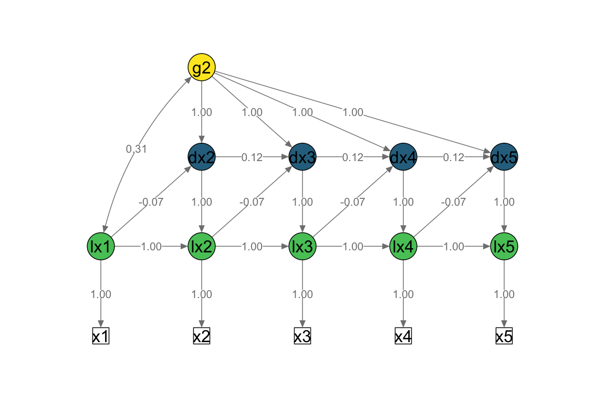
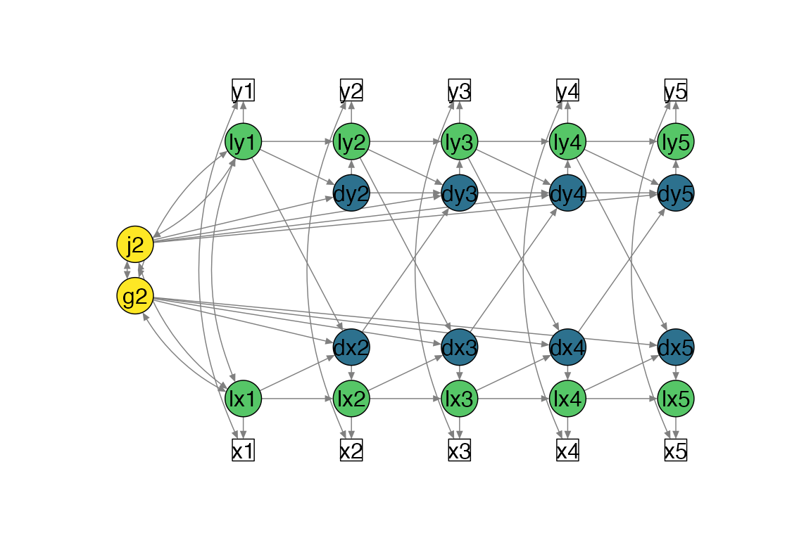

Create path diagrams to visualise model specifications
Source:vignettes/v2-path-diagrams.Rmd
v2-path-diagrams.Rmd
library(lcsm)
#>
#> ── This is lcsm 0.3.1 ──────────────────────────────────────────────────────────
#> ℹ Please report any issues or ideas at:
#> ℹ https://github.com/milanwiedemann/lcsm/issues/Plot simplified path diagrams of LCSMs
This function is work in progress and can only plot univariate and
bivariate LCSMs that were specified with fit_uni_lcsm() or
fit_bi_lcsm(). Modified LCSMs will probably return errors
as the layout matrix that gets created by this plot function only
supports the specifications that can be modelled with this package. The
input arguments for plotting a simplified path dioagram are:
- the estimated lavaan object
lavaan_object, - the
lavaan_syntaxand , -
lcsmindicating whether the LCSM is “univariate” or “bivariate”
Optional arguments can be used to change the look of the plot, for example:
-
lcsm_colourscan be used to highlight the different parts of the latent change score model- white: observed scores
- green: latent true scores
- blue: latent change scores
- yellow: latent change scores
Further arguments can be passed on to
semPlot::semPaths(), for example:
-
what, “path” to show unweighted gray edges, “par” to show parameter estimates as weighted (green/red) edges
-
whatLabels, “label” to show edege names as label or “est” for parameter estimates, “hide” to hide edge labels
Univariate LCSM
# Fit bivariate lcsm and save the results
uni_lavaan_results <- fit_uni_lcsm(data = data_uni_lcsm,
var = c("x1", "x2", "x3", "x4", "x5"),
model = list(alpha_constant = TRUE,
beta = FALSE,
phi = TRUE)
)
#> Warning in lav_data_full(data = data, group = group, cluster = cluster, : lavaan WARNING: some cases are empty and will be ignored:
#> 239
# Save the lavaan syntax that is used to create the layout matrix for semPlot
uni_lavaan_syntax <- fit_uni_lcsm(data = data_uni_lcsm,
var = c("x1", "x2", "x3", "x4", "x5"),
model = list(alpha_constant = TRUE,
beta = FALSE,
phi = TRUE),
return_lavaan_syntax = TRUE)
# Plot the results
plot_lcsm(lavaan_object = uni_lavaan_results,
lavaan_syntax = uni_lavaan_syntax,
edge.label.cex = .9,
lcsm_colours = TRUE,
lcsm = "univariate")
Bivariate LCSM
# Fit bivariate lcsm and save the results
bi_lavaan_results <- fit_bi_lcsm(data = data_bi_lcsm,
var_x = c("x1", "x2", "x3", "x4", "x5"),
var_y = c("y1", "y2", "y3", "y4", "y5"),
model_x = list(alpha_constant = TRUE,
beta = TRUE,
phi = FALSE),
model_y = list(alpha_constant = TRUE,
beta = TRUE,
phi = TRUE),
coupling = list(delta_lag_xy = TRUE,
xi_lag_yx = TRUE))
# Save the lavaan syntax that is used to create the layout matrix for semPlot
bi_lavaan_syntax <- fit_bi_lcsm(data = data_bi_lcsm,
var_x = c("x1", "x2", "x3", "x4", "x5"),
var_y = c("y1", "y2", "y3", "y4", "y5"),
model_x = list(alpha_constant = TRUE,
beta = TRUE,
phi = FALSE),
model_y = list(alpha_constant = TRUE,
beta = TRUE,
phi = TRUE),
coupling = list(delta_lag_xy = TRUE,
xi_lag_yx = TRUE),
return_lavaan_syntax = TRUE)
# Plot the results
plot_lcsm(lavaan_object = bi_lavaan_results,
lavaan_syntax = bi_lavaan_syntax,
lcsm_colours = TRUE,
whatLabels = "hide",
lcsm = "bivariate")